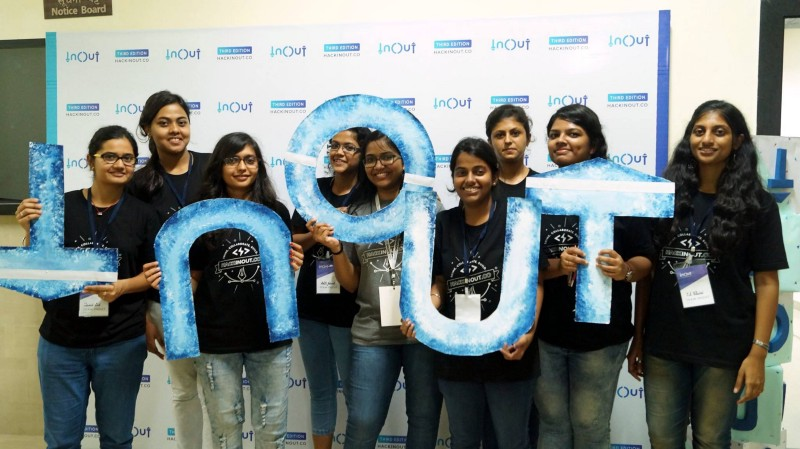
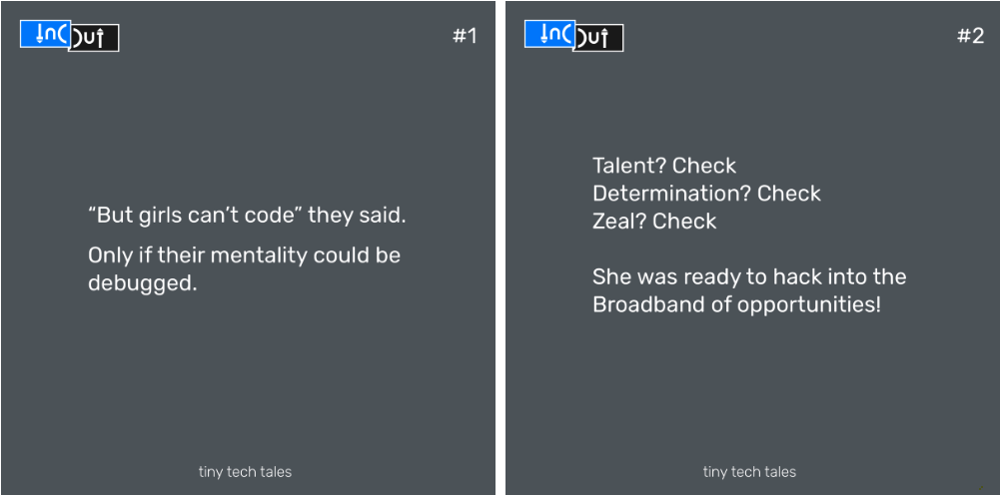
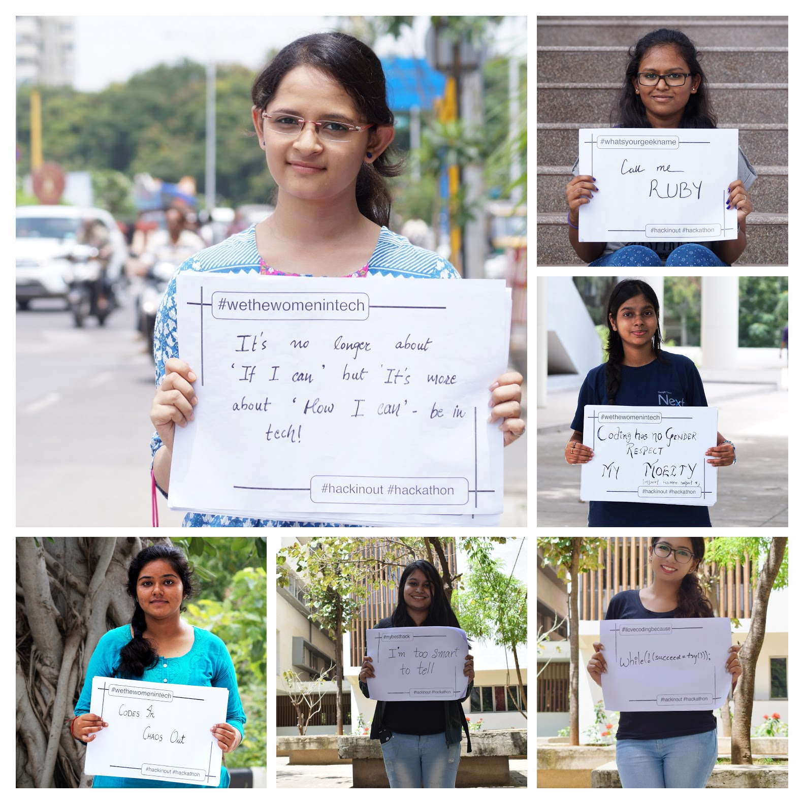
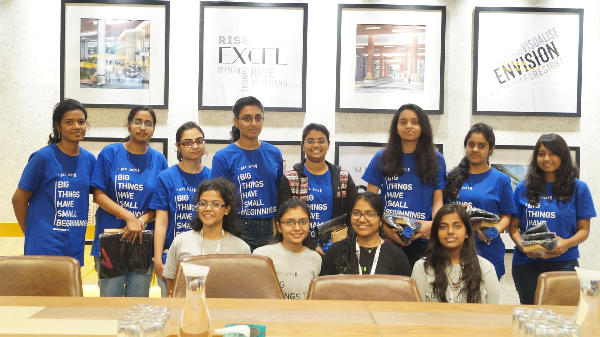

Gender Diversity in ‘Hack && Tech’
A little mindset change can make all the difference!
Looking at the recent studies of next generation of women in tech, the picture isn’t rosy. The gender gap in Indian tech is as huge as sex ratio in the country. Computer science is one of the ever growing industry in the form of innovations but there’s a clear disconnection between this industry and the percentage of women being a part of it.
The world is celebrating International Women's day today and it feels sad to see that some major women talent has been intimidated in many companies. Then why is this a celebratory day? This is one of the reasons I have seen very less female developers in hackathons like InOut of which I’m part of the organising team. According to a recent study by Centre for Talent Innovation, 45% of Indian women in tech feel that they’ve been sabotaged in their positions within the Science, Engineering and Technology industries and 20% of them are more likely to quit their jobs. Reasons?
- Bro culture at work
- Isolation from major project responsibilities
- Lack of effective Sponsors
- Family & Stereotypes
So where is the problem? Perhaps the gender stereotyped suggestions they receive about being in the field of tech is a big discouragement. Looking back at the early development scenario of young girls in high schools, girls perform significantly better in terms of grades than boys whereas while pursuing higher studies in technology, girls are outnumbered (10% females on campuses) by boys and hence the quitting. At official/non-official gatherings, women are expected to behave in prejudicial manner and their fun-self is often restricted. Residuals of sexist prejudices protray girls as emotionally responsive and communicative and yet they're childlike, helpless and incompetent.
My motive is not to crib about the difference but to tell everyone that this difference can be eliminated. Following this, I work with my team of 8 girls and 4 boys demoting this disparity at InOut.

Our team at InOut decided to come up with an initiative to fill this gender gap in tech. The reasons behind this initiative were;
-
They need to be told that they’re not any less when it comes to innovation and can do better than boys when given right opportunity and direction.
-
It is important to let them know that though they’re living in an independent country but the tech world will get its freedom only when they add diversity to it.
We settled for a plan of action to seriously work on this issue and make our hackathon welcoming and accessible to every woman. We launched our own series of tiny tech tales inspiring girls to get up and code. Sharing a few:

Having received great appreciation, this inspired us to start a diversity drive where we shared a form comprising of questions which tells the experiences of girls in this world of symbols. With this, some of the students came up to share the “Essence of women in tech” with us and wrote their hearts out via placards!

In response, the percentage of women applying to InOut has raised considerably. Since year 2016, where the number of female coders attending InOut was just 9%, Indira Gandhi Delhi Technical University for Women stood second in the leaderboard of institutes with maximum applications in 2017 and the percentage of girls attending InOut increased to 20%. InOut 4.0 received 4543 applications from 542 institutes across 8 countries in just 25 days, which was another overwelhming experience altogether. I still think that there's scope to do much more and I along with my team, need more people backing us to support our initiative.

While we hosted InOut 4.0, .CO played an important role in helping us promote women in tech in India by sponsoring our initiative. Chelsea Hurley who leads Business Development and Marketing at .CO, shared her views with us as to how this gap can be removed- "We need to shepherd but not shove girls. Allow them to genuinely be passionate about projects, hobbies and interests then explore those further in a more structured atmosphere as they mature. When we allow people to pursue their passions genuinely, they are natural and no pre-conceived notions are built-in."
Well said, Chelsea!
She at .CO is helping in re-launching a Women in Tech campaign partnering with other companies and has a wonderful take home message for all the female developers-"Continue to be confident, be curious and surround yourself with people who support you."
We, with the support of companies and organisations like .CO, are looking forward to hosting the warriors of change again in InOut 5.0 because it is need of the hour to embrace the unbiased change in technology!
InOut wouldn’t exist without the generous help of our sponsors. If you or your organisation want to support us, read more about our work here - https://hackinout.co/sponsor
Subscribe to InOut Blog | India's biggest community hackathon
Get the latest posts delivered right to your inbox